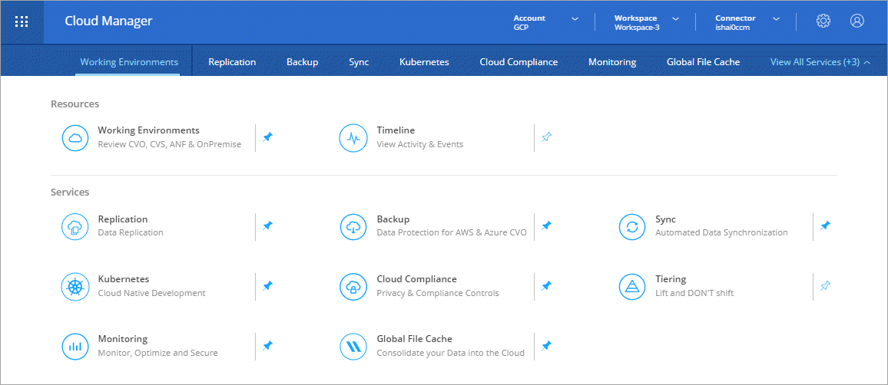

Dokumentationsänderungen beantragen
Dokumentationsänderungen beantragen In GitHub bearbeiten
In GitHub bearbeiten Leitfaden für Beitragende
Leitfaden für BeitragendeGehen Sie zur Dokumentation für die neueste Version.
Neues in Cloud Manager 3.8
Beitragende
Cloud Manager stellt in der Regel jeden Monat eine neue Version vor, mit der Sie neue Funktionen, Verbesserungen und Fehlerbehebungen erhalten.

|
Suchen Sie nach einer früheren Version?"Neuerungen in 3.7" "Neuerungen in 3.6" "Neuerungen in 3.5" |
Neuer Terraform-Provider (19. Oktober 2020)
Wir haben einen neuen Terraform-Provider entwickelt, mit dem DevOps-Teams Cloud Volumes ONTAP mit Cloud Manager automatisieren und in Infrastruktur-als-Code integrieren können.
Update zu Cloud Manager 3.8.9 (18. Oktober 2020)
Durch den Einsatz "Spot’s Cloud Analyzer", Cloud Manager bietet jetzt eine allgemeine Kostenanalyse Ihrer Cloud-Computing-Ausgaben und zeigt potenzielle Einsparungen auf. Diese Informationen erhalten Sie im Compute Service in Cloud Manager. "Weitere Informationen .".

Update zu Cloud Manager 3.8.9 (13. Oktober 2020)
Wir haben zwei Cloud Tiering Updates veröffentlicht:
-
Lizenzierung für Cloud Tiering ist jetzt bei Cloud Manager erhältlich.
Sie bezahlen für Daten-Tiering von einem ONTAP Cluster vor Ort in die Cloud über ein Pay-as-you-go-Abonnement, eine ONTAP-Tiering-Lizenz namens FabricPool oder eine Kombination beider Optionen.
-
Der Standalone-Service Cloud Tiering wurde außer Betrieb genommen. Sie sollten jetzt direkt über Cloud Manager auf Cloud Tiering zugreifen, wo alle gleichen Funktionen verfügbar sind.
Cloud Manager 3.8.9 (4. Okt. 2020)
-
Compliance enhancements
-
Volumes Service for AWS enhancements
-
Sync integration
-
management enhancements
-
for Government regions
Verbesserungen bei Cloud Compliance
-
Eine neue Cloud Compliance Viewer-Rolle steht in Cloud Manager zur Verfügung.
Benutzer, denen diese Rolle zugewiesen ist, können nur Compliance-Informationen anzeigen und Berichte für Arbeitsbereiche erstellen, auf die sie zugreifen können. Sie können Cloud Compliance-Einstellungen nicht managen und haben keinen Zugriff auf andere Funktionen und Services von Cloud Manager. Dies ist möglicherweise die perfekte Rolle für Ihre Rechtsabteilung, um die Ergebnisse von Cloud Compliance-Scans zu überwachen. Siehe "Benutzerrollen" Entsprechende Details.
-
Unterstützung zum Scannen von MongoDB und PostgreSQL-Datenbankschemas hinzugefügt. Siehe "Datenbankschemas werden gescannt" Finden Sie weitere Informationen.
-
Die Preise für Cloud-Compliance ändern sich ab dem 7. Oktober.
Es sind die ersten 1 TB an Daten, die Cloud Compliance in einem Cloud Manager Workspace scannt, kostenlos. Dazu gehören Daten von Cloud Volumes ONTAP Volumes, Azure NetApp Files Volumes, Amazon S3 Buckets und Datenbank-Schemas. Um zusätzliche Daten nach Erreichen von 1 TB zu scannen, ist ein Abonnement erforderlich. Siehe "Preisgestaltung" Entsprechende Details.
Verbesserungen von Cloud Volumes Service für AWS
Wenn ein neues Volume erstellt wird, können Sie dieses Volume auf einer vorhandenen Snapshot-Kopie eines anderen Volume basieren.
Cloud Sync Integration
Der NetApp Cloud Sync Service ist jetzt über Cloud Manager verfügbar. Cloud Sync bietet eine einfache, sichere und automatisierte Möglichkeit, Ihre Daten von einem beliebigen Quellziel zu einem beliebigen Zielziel, in der Cloud oder vor Ort zu migrieren. "Weitere Informationen .".
Verbesserungen beim Account-Management
Wir haben weitere Möglichkeiten zur Verwaltung Ihres Kontos hinzugefügt.
-
Eine Übersicht über die Ressourcen Ihres Accounts finden Sie jetzt.
Sie können schnell die Anzahl der Benutzer, Arbeitsbereiche, Anschlüsse und Abonnements in Ihrem Konto anzeigen.
-
Sie können den Namen Ihres Kontos ändern.
-
Sie können Ihre Konto-ID, die Workspace-ID oder die Konnektor-ID kopieren.
Das Kopieren dieser IDs hilft bei den von uns geplanten Automatisierungsfunktionen.
-
Sie können die Verwendung der SaaS-Plattform deaktivieren.
Wir empfehlen, die SaaS-Plattform nur zu deaktivieren, wenn Sie zur Einhaltung der Sicherheitsrichtlinien Ihres Unternehmens erforderlich sind. Die Deaktivierung der SaaS-Plattform schränkt Ihre Möglichkeiten zur Nutzung der integrierten Cloud-Services von NetApp ein. "Weitere Informationen .".

Änderungen für Regierungsregionen
Wenn Sie einen Connector in einer AWS GovCloud Region, einer Azure Gov-Region oder einer Azure DoD-Region implementieren, steht der Zugriff auf Cloud Manager jetzt nur über die Host-IP-Adresse eines Connectors zur Verfügung. Der Zugriff auf die SaaS-Plattform ist für das gesamte Konto deaktiviert.
Das bedeutet, dass nur privilegierte Benutzer, die auf die interne VPC/vnet des Endbenutzers zugreifen können, die UI oder die API von Cloud Manager verwenden können.
Update für Cloud Manager 3.8.8 (22. Sept. 2020)
Wir haben den Kubernetes-Service erweitert, um die Verwendung zu vereinfachen und zusätzliche Funktionen zur Verfügung zu stellen:
-
Es ist einfacher, die Kubernetes-Cluster zu erkennen, die im Managed Kubernetes Service Ihres Cloud-Providers ausgeführt werden.
Klicken Sie einfach auf Discover Clusters und Cloud Manager entdeckt Ihre verwalteten Cluster mit den von Ihnen bereits bereitgestellten Cloud-Provider-Berechtigungen.
-
Sie können jetzt weitere Informationen zu einem erkannten Kubernetes Cluster anzeigen, einschließlich des Zustands, der Anzahl der Volumes, der Storage-Klassen und mehr.

-
Wir haben eine Ressourcen- und Fehlerprüfung hinzugefügt, um sicherzustellen, dass die Kommunikation zwischen dem Cluster und dem Cloud Volumes ONTAP verfügbar ist. Falls nicht, lassen wir Sie es wissen.
Beachten Sie, dass das Service-Konto für einen Connector die folgenden Berechtigungen benötigt, um Kubernetes-Cluster zu ermitteln und zu managen, die in der Google Kubernetes Engine (GKE) ausgeführt werden:
- container.*Update für Cloud Manager 3.8.8 (10. Sept. 2020)
Bei der Implementierung von Global File Cache über Cloud Manager sind die folgenden Verbesserungen verfügbar:
-
Ein Cloud Volumes ONTAP HA Pair in AWS wird nun als Back-End Storage-Plattform für Ihren zentralen Storage unterstützt.
-
Mehrere Global File Cache Core-Instanzen können in einem Design mit mehreren Load-Distributed-Dateien implementiert werden.
Cloud Manager 3.8.8 (9. Sept. 2020)
-
for Cloud Volumes Service for Google Cloud
-
to Cloud now supports on-premises ONTAP clusters
-
to Cloud enhancements
-
Compliance enhancements
-
navigation
-
improvements
Unterstützung von Cloud Volumes Service für Google Cloud
-
Hinzufügen einer Arbeitsumgebung zum Management vorhandener Cloud Volumes Service für GCP Volumes und zur Erstellung neuer Volumes "Erfahren Sie, wie".
-
Erstellen und managen Sie NFSv3 und NFSv4.1 Volumes für Linux- und UNIX-Clients sowie SMB 3.x Volumes für Windows-Clients.
-
Erstellung, Löschung und Wiederherstellung von Volume Snapshots
Backup in die Cloud unterstützt jetzt lokale ONTAP Cluster
Sie erstellen Backups Ihrer Daten von On-Premises-ONTAP-Systemen in der Cloud. Backup in der Cloud in On-Premises-Arbeitsumgebungen für das Backup von Volumes auf Azure Blob Storage "Weitere Informationen .".
Backup in die Cloud
Die Benutzeroberfläche wurde für eine bessere Bedienbarkeit überarbeitet:
-
Auf der Volume-Listenseite finden Sie ganz einfach die zu sichernden Volumes mit den verfügbaren Backups
-
Backup-Einstellungen, um Backup-Einstellungen für jede Arbeitsumgebung anzuzeigen
Verbesserungen bei Cloud Compliance
-
Möglichkeit zum Scannen von Daten aus Datenbanken
Scannen Sie Ihre Datenbanken, um persönliche und sensible Daten in jedem Schema zu identifizieren. Zu den unterstützten Datenbanken gehören Oracle, SAP HANA und SQL Server (MSSQL). "Erfahren Sie mehr über das Scannen von Datenbanken".
-
Scannen von Datensicherungs-Volumes (DP)
DP-Volumes sind Ziel-Volumes von SnapMirror Vorgängen in der Regel von On-Premises-ONTAP-Clustern. Sie können nun problemlos persönliche und sensible Daten in diesen On-Premises-Dateien ermitteln. "Erfahren Sie, wie".
Navigation wurde aktualisiert
Wir haben die Kopfzeile in Cloud Manager aktualisiert, um Ihnen die Navigation zwischen NetApp Cloud-Services zu erleichtern.
Klicken Sie auf Alle Dienste anzeigen und Sie können die Dienste, die Sie sehen möchten, in der Navigation anpinnen und lösen.

Wie Sie sehen, haben wir auch die Dropdown-Menüs Konto, Arbeitsbereich und Connector aktualisiert, sodass Sie Ihre aktuellen Einstellungen leichter anzeigen können.
Verbesserte Administration
-
Sie können nun inaktive Verbindungen aus Cloud Manager entfernen. "Erfahren Sie, wie".

-
Sie können jetzt das Marketplace-Abonnement ersetzen, das derzeit mit Ihren Zugangsdaten für Cloud-Provider verknüpft ist. Wenn Sie jemals die Abrechnung ändern müssen, können Sie mit dieser Änderung sicherstellen, dass Sie über das richtige Marketplace-Abonnement belastet werden.
Erfahren Sie, wie "In AWS statt", "In Azure aus", und "In GCP ein".
Update zu erforderlichen Azure Berechtigungen (6. Aug. 2020)
Um Azure-Bereitstellungsausfälle zu vermeiden, stellen Sie sicher, dass Ihre Cloud Manager-Richtlinie in Azure die folgende Berechtigung enthält:
"Microsoft.Resources/deployments/operationStatuses/read"Für Azure ist diese Berechtigung jetzt für einige Implementierungen von Virtual Machines erforderlich (es hängt von der zugrunde liegenden physischen Hardware ab, die während der Implementierung verwendet wird).
Cloud Manager 3.8.7 (3. August 2020)
-
software-as-a-service experience
-
Volumes ONTAP enhancements
-
NetApp Files enhancements
-
Volumes Service for AWS enhancements
-
Compliance enhancements
-
to Cloud enhancements
-
for Global File Cache
Neue Software-als-Service-Lösung
Wir haben für Cloud Manager ein Software-als-Service-Erlebnis auf den Markt gebracht. Durch diese neue Erfahrung können Sie Cloud Manager einfacher nutzen. Wir stellen zusätzliche Funktionen zum Management Ihrer Hybrid-Cloud-Infrastruktur bereit.
Cloud Manager beinhaltet eine "SaaS-basierte Schnittstelle" Die Lösung ist in NetApp Cloud Central integriert und verfügt über Anschlüsse, über die Cloud Manager Ressourcen und Prozesse in Ihrer Public Cloud-Umgebung managen kann. (Der Connector ist tatsächlich dieselbe wie die vorhandene Cloud Manager-Software, die Sie installiert haben.)

|
In den meisten Fällen ist ein Connector erforderlich, es ist jedoch nicht erforderlich, Azure NetApp Files, Cloud Volumes Service oder Cloud Sync von Cloud Manager zu verwenden. |
Wie bereits in diesen Versionshinweisen erwähnt, müssen Sie den Maschinentyp für Ihre Connectors aktualisieren, um auf die neuen Funktionen zugreifen zu können, die wir anbieten. Cloud Manager fordert Sie zur Änderung des Maschinentyps auf. "Weitere Informationen .".
Verbesserungen von Cloud Volumes ONTAP
Für Cloud Volumes ONTAP sind zwei Verbesserungen verfügbar.
-
Mehrere Byol-Lizenzen zur Zuweisung zusätzlicher Kapazität
Sie können nun mehrere Lizenzen für ein Cloud Volumes ONTAP BYOL-System erwerben und so mehr als 368 TB Kapazität zuweisen. Beispielsweise können Sie zwei Lizenzen erwerben, um Cloud Volumes ONTAP bis zu 736 TB Kapazität zuzuweisen. Alternativ können Sie vier Lizenzen erwerben, um bis zu 1.4 PB zu erhalten.
Die Anzahl der Lizenzen, die Sie für ein Single Node-System oder ein HA-Paar erwerben können, ist unbegrenzt.
Beachten Sie, dass die Festplattenbeschränkungen verhindern können, dass Sie durch die Verwendung von Festplatten allein das Kapazitätslimit nicht erreichen. Sie können die Festplattengrenze um überschreiten "tiering inaktiver Daten in Objektspeicher". Weitere Informationen zu Festplattenlimits finden Sie unter "Speichergrenzwerte in den Versionshinweisen zu Cloud Volumes ONTAP".
-
* Azure verwaltete Festplatten mit externen Schlüsseln verschlüsseln*
Sie können nun verwaltete Azure Festplatten auf Cloud Volumes ONTAP-Systemen mit einem einzelnen Node mit externen Schlüsseln aus einem anderen Konto verschlüsseln. Diese Funktion wird durch APIs unterstützt.
Beim Erstellen des Single-Node-Systems müssen Sie lediglich Folgendes zur API-Anforderung hinzufügen:
"azureEncryptionParameters": { "key": <azure id of encryptionset> }Diese Funktion erfordert neue Berechtigungen, wie in der aktuellen gezeigt "Cloud Manager-Richtlinie für Azure".
"Microsoft.Compute/diskEncryptionSets/read"
Verbesserungen von Azure NetApp Files
Diese Version enthält mehrere Verbesserungen zur Unterstützung von Azure NetApp Files.
-
Azure NetApp Files-Einrichtung
Azure NetApp Files kann jetzt direkt über den Cloud Manager eingerichtet und gemanagt werden. "Erfahren Sie, wie".
-
Neue Protokollunterstützung
Sie können jetzt NFSv4.1 Volumes und SMB Volumes erstellen.
-
Kapazitäts-Pool und Volumen Snapshot-Management
Cloud Manager ermöglicht das Erstellen, Löschen und Wiederherstellen von Volume Snapshots. Sie können auch neue Kapazitäts-Pools erstellen und deren Service Level angeben.
-
Fähigkeit zum Bearbeiten von Volumes
Sie können ein Volume bearbeiten, indem Sie seine Größe ändern und Tags verwalten.
Verbesserungen von Cloud Volumes Service für AWS
Im Cloud Manager wurden viele Verbesserungen zur Unterstützung von Cloud Volumes Service für AWS vorgenommen.
-
Neue Protokollunterstützung
Jetzt können Sie NFSv4.1 Volumes, SMB Volumes und Dual-Protokoll-Volumes erstellen. Zuvor konnten Sie NFSv3 Volumes nur in Cloud Manager erstellen und erkennen.
-
Snapshot-Unterstützung
Sie können Snapshot-Richtlinien erstellen, um die Erstellung von Volume Snapshots zu automatisieren, einen On-Demand-Snapshot zu erstellen, ein Volume aus einem Snapshot wiederherzustellen, ein neues Volume auf der Basis eines vorhandenen Snapshots zu erstellen und mehr. Siehe "Managen von Cloud Volumes Snapshots" Finden Sie weitere Informationen.
-
Erstellen Sie das Initialvolumen in einer Region aus Cloud Manager
Vor diesem Release musste das erste Volume in jeder Region auf der Schnittstelle Cloud Volumes Service für AWS erstellt werden. Jetzt können Sie sich anmelden "Eines der NetApp Cloud Volumes Service-Angebote im AWS Marketplace" Und dann das erste Volume aus Cloud Manager erstellen.
Verbesserungen bei Cloud Compliance
Die folgenden Verbesserungen sind jetzt für Cloud Compliance verfügbar.
-
Überarbeiteter Bereitstellungsprozess für Ihre Cloud Compliance-Instanz
Die Cloud Compliance-Instanz wird mit einem neuen Assistenten in Cloud Manager eingerichtet und bereitgestellt. Nach Abschluss der Bereitstellung aktivieren Sie den Service für jede zu scannenden Arbeitsumgebung.
-
Möglichkeit, die Volumes auszuwählen, die in einer Arbeitsumgebung gescannt werden sollen
Sie können nun die Suche nach einzelnen Volumes in einer Arbeitsumgebung von Cloud Volumes ONTAP oder Azure NetApp Files aktivieren und deaktivieren. Wenn Sie bestimmte Volumes nicht für Compliance scannen müssen, deaktivieren Sie sie.
-
Navigationskarten zum schnellen Sprung in Ihr Interessengebiet
Mit den neuen Registerkarten für Dashboard, Ermittlungen und Konfiguration können Sie diese Abschnitte einfacher erreichen.
-
HIPAA-Bericht
Ein neuer HIPAA-Bericht (Health Insurance Portability and Accountability Act) ist jetzt verfügbar. Dieser Bericht soll die Anforderung Ihres Unternehmens unterstützen, die HIPAA-Datenschutzgesetze einzuhalten.
-
Neuer sensibler personenbezogener Datentyp
Cloud Compliance kann jetzt ICD-9-CM Medical Codes in Dateien finden.
-
Neuer personenbezogener Datentyp
Cloud Compliance kann jetzt zwei neue nationale Kennungen in Dateien finden: Kroatische ID (OIB) und griechische ID.
Backup in die Cloud
Die folgenden Verbesserungen sind jetzt für Backup in der Cloud verfügbar.
-
Bring your own License (BYOL) ist jetzt verfügbar
Backup in die Cloud war nur mit einer PAYGO-Lizenz (Pay as you Go) verfügbar. Mit einer BYOL-Lizenz können Sie bei NetApp eine Lizenz für die Nutzung von Backup in der Cloud für einen bestimmten Zeitraum und für einen maximalen Speicherplatz in Backup-Bereichen erwerben. Wenn eine der beiden Limits erreicht ist, müssen Sie die Lizenz erneuern.
-
Unterstützung für Data Protection (DP) Volumes
Datensicherungs-Volumes können jetzt gesichert und wiederhergestellt werden.
Unterstützung für Global File Cache
Mit NetApp Global File Cache können Sie Silos verteilter File Server zu einem zusammenhängenden globalen Storage-System in der Public Cloud konsolidieren. Dadurch wird ein global zugängliches File-System in der Cloud geschaffen, das alle verteilten Standorte so nutzen können, als ob sie lokal wären.
Ab dieser Version können die Global File Cache Management-Instanz und die Core-Instanz über Cloud Manager implementiert und gemanagt werden. Dadurch sparen Sie während des ersten Bereitstellungsprozesses viele Stunden und können über Cloud Manager eine zentrale Konsole für diese und andere implementierte Systeme bereitstellen. Instanzen von Global File Cache Edge werden weiterhin lokal an Ihren Remote-Standorten bereitgestellt.
Siehe "Übersicht über Global File Cache" Finden Sie weitere Informationen.
Die Erstkonfiguration, die mit Cloud Manager implementiert werden können, müssen die folgenden Anforderungen erfüllen. Andere Konfigurationen wie Cloud Volumes Service, Azure NetApp Files und Cloud Volumes Service für AWS und GCP werden weiterhin mithilfe der älteren Verfahren implementiert. "Weitere Informationen .".
-
Die als zentraler Storage verwendete Back-End-Speicherplattform muss eine Arbeitsumgebung sein, in der Sie ein Cloud Volumes ONTAP HA-Paar in Azure implementiert haben.
Andere Storage-Plattformen und andere Cloud-Provider werden derzeit nicht mit Cloud Manager unterstützt, können jedoch mit älteren Implementierungsverfahren implementiert werden.
-
Der GFC Core kann nur als Standalone-Instanz eingesetzt werden.
Wenn Sie ein verteiltes Load-Design verwenden möchten, das mehrere Kerninstanzen enthält, müssen Sie die älteren Verfahren verwenden.
Diese Funktion erfordert neue Berechtigungen, wie in der aktuellen gezeigt "Cloud Manager-Richtlinie für Azure".
"Microsoft.Resources/deployments/operationStatuses/read",
"Microsoft.Insights/Metrics/Read",
"Microsoft.Compute/virtualMachines/extensions/write",
"Microsoft.Compute/virtualMachines/extensions/read",
"Microsoft.Compute/virtualMachines/extensions/delete",
"Microsoft.Compute/virtualMachines/delete",
"Microsoft.Network/networkInterfaces/delete",
"Microsoft.Network/networkSecurityGroups/delete",
"Microsoft.Resources/deployments/delete",Verbesserte Erfahrung erfordert stärkeren Maschinentyp (15. Juli 2020)
Mit einer verbesserten Nutzung von Cloud Manager müssen Sie Ihren Maschinentyp aktualisieren, um auf die neuen Funktionen zugreifen zu können, die wir anbieten werden. Die Verbesserungen beinhalten ein "Software-as-a-Service-Lösung für Cloud Manager" Und Integration neuer und verbesserter Cloud-Services.
Cloud Manager fordert Sie zur Änderung des Maschinentyps auf.
Hier sind einige Details:
-
Um sicherzustellen, dass für die ordnungsgemäße Funktion der neuen Funktionen in Cloud Manager ausreichend Ressourcen zur Verfügung stehen, haben wir die Standardinstanz, die VM und den Computertyp wie folgt geändert:
-
AWS: t3.xlarge
-
Azure: DS3 v2
-
GCP: n1-Standard-4
Diese Standardgrößen werden als Minimum unterstützt "Basierend auf CPU- und RAM-Anforderungen".
-
-
Im Rahmen dieser Transition benötigt Cloud Manager Zugriff auf den folgenden Endpunkt, um Software-Images von Containerkomponenten für eine Docker Infrastruktur zu erhalten:
https://cloudmanagerinfraprod.azurecr.io
Stellen Sie sicher, dass Ihre Firewall über Cloud Manager den Zugriff auf diesen Endpunkt ermöglicht.
Cloud Manager 3.8.6 (6. Juli 2020)
-
for iSCSI volumes
-
for the All tiering policy
Unterstützung für iSCSI-Volumes
Mit Cloud Manager können Sie jetzt iSCSI-Volumes für Cloud Volumes ONTAP und lokale ONTAP Cluster direkt über die Benutzeroberfläche erstellen.
Wenn Sie ein iSCSI-Volume erstellen, erstellt Cloud Manager automatisch eine LUN für Sie. Wir haben es einfach gemacht, indem wir nur eine LUN pro Volumen erstellen, so gibt es keine Verwaltung beteiligt. Nachdem Sie das Volume erstellt haben, "Verwenden Sie den IQN, um von den Hosts eine Verbindung zur LUN herzustellen".
|
|
Sie können weitere LUNs aus System Manager oder der CLI erstellen. |
Unterstützung für die All-Tiering-Richtlinie
Sie können nun die „Alle-Tiering“-Richtlinie auswählen, wenn Sie ein Volume für Cloud Volumes ONTAP erstellen oder ändern. Wenn Sie die All-Tiering-Richtlinie verwenden, werden Daten sofort als „kalt“ markiert und in den Objekt-Storage verschoben. "Weitere Informationen zum Daten-Tiering".
Cloud Manager Transition zu SaaS (22. Juni 2020)
Wir führen eine Software-als-Service-Erfahrung für Cloud Manager ein. Durch diese neue Erfahrung können Sie Cloud Manager einfacher nutzen. Wir stellen zusätzliche Funktionen zum Management Ihrer Hybrid-Cloud-Infrastruktur bereit. "Weitere Informationen .".
Cloud Manager 3.8.5 (31. Mai 2020)
-
subscription required in the Azure Marketplace
-
to Cloud enhancements
-
Compliance enhancements
Im Azure Marketplace ist ein neues Abonnement erforderlich
Ein neues Abonnement ist im Azure Marketplace erhältlich. Dieses einmalige Abonnement ist für die Implementierung von Cloud Volumes ONTAP 9.7 PAYGO erforderlich (außer für Ihr kostenloses 30-Tage-Testsystem). Mit dem Abonnement können wir auch Add-on-Funktionen für Cloud Volumes ONTAP PAYGO und BYOL anbieten. Sie erhalten für jedes von Ihnen erstellte Cloud Volumes ONTAP PAYGO-System und jedes von Ihnen aktiviert Add-on-Feature eine Gebühr in Höhe dieses Abonnements.
Cloud Manager fordert Sie auf, dieses Angebot bei der Implementierung eines neuen Cloud Volumes ONTAP Systems (9.7 P1 oder höher) zu abonnieren.

Backup in die Cloud
Die folgenden Verbesserungen sind jetzt für Backup in der Cloud verfügbar.
-
In Azure können Sie jetzt eine neue Ressourcengruppe erstellen oder eine vorhandene Ressourcengruppe auswählen, anstatt eine von Cloud Manager erstellen zu müssen. Die Ressourcengruppe kann nicht geändert werden, nachdem Sie Backup in Cloud aktiviert haben.
-
In AWS können Sie jetzt ein Backup von Cloud Volumes ONTAP Instanzen erstellen, die sich in einem anderen AWS Konto befinden als Ihr Cloud Manager AWS Konto.
-
Bei der Auswahl des Backup-Zeitplans für Volumes stehen jetzt weitere Optionen zur Verfügung. Zusätzlich zu den täglichen, wöchentlichen und monatlichen Backup-Optionen steht nun eine der systemdefinierten Richtlinien zur Verfügung, die Kombinationsrichtlinien wie etwa 30 tägliche, 13 wöchentliche und 12 monatliche Backups enthalten.
-
Nachdem Sie alle Backups für ein Volume gelöscht haben, können Sie jetzt wieder Backups für dieses Volume erstellen. Dies war eine bekannte Einschränkung in der vorherigen Version.
Verbesserungen bei Cloud Compliance
Folgende Verbesserungen sind für Cloud Compliance verfügbar:
-
Sie können jetzt S3-Buckets scannen, die sich in unterschiedlichen AWS-Konten befinden als die Cloud-Compliance-Instanz. In diesem neuen Konto müssen Sie nur eine Rolle erstellen, damit die vorhandene Cloud Compliance-Instanz eine Verbindung zu diesen Buckets herstellen kann. "Weitere Informationen .".
Wenn Sie Cloud-Compliance vor Version 3.8.5 konfiguriert haben, müssen Sie die vorhandene ändern "IAM-Rolle für die Cloud Compliance-Instanz" Um diese Funktion zu verwenden.
-
Sie können jetzt den Inhalt der Untersuchungsseite filtern, um nur die Ergebnisse anzuzeigen, die Sie sehen möchten. Die Filter umfassen Arbeitsumgebung, Kategorie, private Daten, Dateityp, Datum der letzten Änderung, Und ob die Berechtigungen des S3-Objekts für den öffentlichen Zugriff zugänglich sind.

-
Sie können Cloud Compliance jetzt direkt über die Registerkarte Cloud Compliance in einer Arbeitsumgebung aktivieren und deaktivieren.
Update zu Cloud Manager 3.8.4 (10. Mai 2020)
Wir haben eine Verbesserung für Cloud Manager 3.8.4 veröffentlicht.
Cloud Insights Integration
Durch den Einsatz des NetApp Cloud Insights-Service liefert Cloud Manager Einblicke in den Zustand und die Performance der Cloud Volumes ONTAP Instanzen und unterstützt Sie bei der Fehlerbehebung und Optimierung der Performance Ihrer Cloud-Storage-Umgebung. "Weitere Informationen .".
Cloud Manager 3.8.4 (3. Mai 2020)
In Cloud Manager 3.8.4 ist folgende Verbesserung enthalten:
Backup in die Cloud
Die folgenden Verbesserungen stehen jetzt für Backup in der Cloud zur Verfügung (ehemals Backup zu S3 für AWS):
-
* Backups auf Azure Blob Storage*
Backup in der Cloud ist jetzt für Cloud Volumes ONTAP in Azure verfügbar. Backup in der Cloud bietet Backup- und Restore-Funktionen zum Schutz und zur langfristigen Archivierung Ihrer Cloud-Daten. "Weitere Informationen .".
-
Backups werden gelöscht
Alle Backups für ein bestimmtes Volume können nun direkt über die Benutzeroberfläche von Cloud Manager gelöscht werden. "Weitere Informationen .".
Cloud Manager 3.8.3 (5. April 2020)
-
Tiering integration
-
migration to Azure NetApp Files
-
Compliance enhancements
-
to S3 enhancements
-
volumes using APIs
Integration von Cloud-Tiering
Der NetApp Cloud Tiering Service ist jetzt über Cloud Manager verfügbar. Mit Cloud-Tiering können Sie Daten von einem lokalen ONTAP Cluster zu kostengünstigerem Objekt-Storage in der Cloud verschieben. So wird im Cluster High-Performance-Speicherplatz für mehr Workloads frei.
Datenmigration auf Azure NetApp Files
NFS- oder SMB-Daten lassen sich nun direkt über Cloud Manager zu Azure NetApp Files migrieren. Die Synchronisierung von Daten wird durch den NetApp Cloud Sync Service unterstützt.
Verbesserungen bei Cloud Compliance
Die folgenden Verbesserungen sind jetzt für Cloud Compliance verfügbar.
-
30 Tage kostenlos testen mit Amazon S3
Zum Scannen von Amazon S3 Daten mit Cloud Compliance steht jetzt eine kostenlose 30-Tage-Testversion zur Verfügung. Wenn Sie zuvor Cloud-Compliance auf Amazon S3 aktiviert haben, ist Ihre kostenlose 30-Tage-Testversion ab heute aktiv (5. April 2020).
Ein Abonnement des AWS Marketplace muss nach dem Ende der kostenlosen Testversion weiterhin Amazon S3 scannen. "Erfahren Sie, wie Sie abonniert werden können".
-
Neuer personenbezogener Datentyp
Cloud Compliance kann jetzt eine neue nationale Kennung in Dateien finden: Brasilianische ID (CPF).
-
Unterstützung für weitere Metadaten Kategorien
In Cloud Compliance können Sie Ihre Daten jetzt in neun weitere Metadatenkategorien kategorisieren. "Weitere Informationen finden Sie in der vollständigen Liste der unterstützten Metadatenkategorien".
Backup auf S3-Verbesserungen
Die folgenden Verbesserungen sind jetzt für den Service Backup to S3 verfügbar.
-
S3 Lifecycle Policy für Backups
Backups beginnen in der Klasse Standard Storage und wechseln nach 30 Tagen zur Storage-Klasse Standard-infrequent Access.
-
Backups werden gelöscht
Backups können jetzt über eine Cloud Manager API gelöscht werden. "Weitere Informationen .".
-
* Öffentlichen Zugang blockieren*
Cloud Manager ermöglicht das jetzt "Amazon S3 Block – Public Access-Funktion" Auf dem S3-Bucket, wo Backups gespeichert werden
ISCSI-Volumes mit APIs
Mit den Cloud Manager APIs können Sie jetzt iSCSI Volumes erstellen. "Zeigen Sie hier ein Beispiel an".
Cloud Manager 3.8.2 (1. März 2020)
-
S3 working environments
-
Compliance enhancements
-
version for volumes
-
for Azure US Gov regions
Amazon S3-Arbeitsumgebungen
Cloud Manager erkennt jetzt automatisch Informationen zu den Amazon S3 Buckets, die sich im AWS Konto befinden, wo sie installiert sind. Dadurch haben Sie problemlos Details zu Ihren S3 Buckets, einschließlich Region, Zugriffsebene, Storage-Klasse und darüber, ob der Bucket mit Cloud Volumes ONTAP für Backups oder Daten-Tiering verwendet wird. Zudem können Sie die S3-Buckets mithilfe von Cloud Compliance scannen, wie unten beschrieben.

Verbesserungen bei Cloud Compliance
Die folgenden Verbesserungen sind jetzt für Cloud Compliance verfügbar.
-
Unterstützung für Amazon S3
Cloud Compliance kann jetzt Ihre Amazon S3 Buckets scannen, um die persönlichen und sensiblen Daten im S3 Objekt-Storage zu identifizieren. Cloud Compliance kann jeden Bucket auf dem Konto scannen, unabhängig davon, ob er für eine NetApp Lösung erstellt wurde.
-
Untersuchungsseite
Für jeden Typ von persönlichen Dateien, sensiblen persönlichen Dateien, Kategorien und Dateitypen steht jetzt eine neue Untersuchungsseite zur Verfügung. Die Seite zeigt Details zu den betroffenen Dateien an und ermöglicht die Sortierung nach Dateien, die die meisten personenbezogenen Daten, sensible personenbezogene Daten und Namen der betroffenen Personen enthalten. Diese Seite ersetzt den zuvor verfügbaren CSV-Bericht.
Hier ein Beispiel:

-
PCI DSS Report
Ein neuer Payment Card Industry Data Security Standard (PCI DSS) Report ist jetzt verfügbar. Dieser Bericht kann Ihnen dabei helfen, die Verteilung von Kreditkarteninformationen auf Ihre Dateien zu identifizieren. Sie können sehen, wie viele Dateien Kreditkarteninformationen enthalten, ob die Arbeitsumgebungen durch Verschlüsselung, Ransomware-Schutz, Aufbewahrungsdetails und vieles mehr geschützt sind.
-
Neuer sensibler personenbezogener Datentyp
Cloud Compliance kann jetzt ICD-10-CM Medical Codes finden, die in der Medizin- und Gesundheitsbranche verwendet werden.
NFS-Version für Volumes
Sie können nun die NFS-Version auswählen, die auf einem Volume aktiviert werden soll, wenn Sie ein Volume für Cloud Volumes ONTAP erstellen oder bearbeiten.

Support für Azure US-Regionen
Cloud Volumes ONTAP HA-Paare werden jetzt in Azure US-Regionen unterstützt.
Update zu Cloud Manager 3.8.1 (16. Februar 2020)
Wir haben einige Verbesserungen an Cloud Manager 3.8 veröffentlicht.
Backup auf S3-Verbesserungen
-
Backup-Kopien werden nun in einem S3-Bucket gespeichert, den Cloud Manager in Ihrem AWS-Konto erstellt, mit einem Bucket pro Cloud Volumes ONTAP-Arbeitsumgebung.
-
Backup in S3 wird jetzt in allen AWS Regionen unterstützt "Wobei Cloud Volumes ONTAP unterstützt wird".
-
Sie können den Backup-Zeitplan auf täglich, wöchentlich oder monatlich festlegen.
-
Cloud Manager muss keine privaten Links zum Backup to S3 Service einrichten.
Für diese Verbesserungen sind zusätzliche S3 Berechtigungen erforderlich. Die IAM-Rolle, die Cloud Manager über Berechtigungen verfügt, muss Berechtigungen von der neuesten enthalten "Cloud Manager-Richtlinie".
AWS Updates
Wir haben die Unterstützung für neue EC2 Instanzen eingeführt und eine Änderung der Anzahl der unterstützten Datenfestplatten für Cloud Volumes ONTAP 9.6 und 9.7. Sehen Sie sich die Änderungen in den Versionshinweisen zu Cloud Volumes ONTAP an.
Cloud Manager 3.8.1 (2. Februar 2020)
-
Compliance enhancements
-
to accounts and subscriptions
-
enhancements
Verbesserungen bei Cloud Compliance
Die folgenden Verbesserungen sind jetzt für Cloud Compliance verfügbar.
-
Unterstützung für Azure NetApp Files
Wir freuen uns, Ihnen bekannt geben zu können, dass Cloud Compliance Azure NetApp Files jetzt einscannen kann, um persönliche und sensible Daten auf Volumes zu identifizieren.
-
Scan-Status
Cloud Compliance zeigt Ihnen nun einen Scanstatus für jedes CIFS- und NFS-Volume, einschließlich Fehlermeldungen, mit denen Sie Probleme beheben können.

-
Dashboard nach Arbeitsumgebung filtern
Sie können den Inhalt des Cloud Compliance-Dashboards jetzt filtern, um Compliance-Daten für bestimmte Arbeitsumgebungen anzuzeigen.

-
Neuer personenbezogener Datentyp
Cloud Compliance kann jetzt beim Scannen von Daten die Lizenz eines kalifornischen Treibers ermitteln.
-
Unterstützung für weitere Kategorien
Weitere drei Kategorien werden unterstützt: Anwendungsdaten, Protokolle sowie Datenbank- und Indexdateien.
Erweiterungen für Konten und Abonnements
Die Auswahl eines AWS Accounts oder GCP-Projekts wird vereinfacht und es ist ein damit verbundener Marketplace-Abonnement für ein Pay-as-you-go-Cloud Volumes ONTAP-System erforderlich. Diese Verbesserungen sorgen dafür, dass Sie von Ihrem Konto oder Projekt aus zahlen.
Wenn Sie beispielsweise ein System in AWS erstellen, klicken Sie auf Anmeldedaten bearbeiten, wenn Sie das Standardkonto und das Abonnement nicht verwenden möchten:

Dort können Sie die gewünschten Kontodaten sowie das zugehörige AWS Marketplace Abonnement auswählen. Sie können auch ein Abonnement für den Marktplatz hinzufügen, wenn Sie es benötigen.

Wenn Sie mehrere AWS-Abonnements verwalten, können Sie jedes davon verschiedenen AWS Zugangsdaten auf der Seite „Anmeldeinformationen“ in den Einstellungen zuweisen:

Verbesserungen in der Zeitleiste
In der Zeitleiste haben wir weitere Informationen zu den von Ihnen genutzten NetApp Cloud-Services erhalten.
-
In der Zeitleiste werden nun Aktionen für alle Cloud Manager-Systeme im selben Cloud Central-Konto angezeigt
-
Sie können jetzt einfacher Informationen finden, indem Sie Spalten filtern, suchen und hinzufügen und entfernen
-
Sie können die Zeitachsendaten jetzt im CSV-Format herunterladen
-
In der Zukunft werden in der Zeitleiste Aktionen für jeden von Ihnen verwendeten NetApp Cloud-Service angezeigt (die Informationen können jedoch nach unten auf einen einzelnen Service gefiltert werden).

Cloud Manager 3.8 (8. Januar 2020)
-
enhancements in Azure
-
tiering enhancements in GCP
HA-Verbesserungen in Azure
Die folgenden Verbesserungen sind jetzt für Cloud Volumes ONTAP HA-Paare in Azure verfügbar.
-
Überschreiben von CIFS-Locks für Cloud Volumes ONTAP HA in Azure
Sie können jetzt in Cloud Manager eine Einstellung aktivieren, die Probleme mit dem Cloud Volumes ONTAP Storage Failover bei Azure-Wartungsereignissen verhindert. Wenn Sie diese Einstellung aktivieren, sperrt Cloud Volumes ONTAP Vetoes CIFS und setzt aktive CIFS-Sitzungen zurück. "Weitere Informationen .".
-
HTTPS-Verbindung von Cloud Volumes ONTAP zu Speicherkonten
Sie können jetzt bei der Erstellung einer Arbeitsumgebung eine HTTPS-Verbindung von einem Cloud Volumes ONTAP 9.7 HA-Paar zu Azure Storage-Konten aktivieren. Beachten Sie, dass die Aktivierung dieser Option sich auf die Schreib-Performance auswirken kann. Sie können die Einstellung nicht ändern, nachdem Sie die Arbeitsumgebung erstellt haben.
-
Unterstützung für allgemeine Azure v2 Storage-Konten
Die Storage-Konten, die Cloud Manager für Cloud Volumes ONTAP 9.7 HA-Paare erstellt, sind jetzt allgemeine v2 Storage-Konten.
Verbesserungen beim Daten-Tiering in GCP
Die folgenden Verbesserungen sind für Cloud Volumes ONTAP Daten-Tiering in GCP verfügbar.
-
Google Cloud Speicherklassen für Daten-Tiering
Nun können Sie eine Storage-Klasse für Daten auswählen, die Cloud Volumes ONTAP in Google Cloud Storage Tiers verschieben:
-
Standard-Storage (Standard)
-
Nearline Storage
-
Coldline Storage
-
-
Daten-Tiering mit einem Service-Konto
Ab Version 9.7 legt Cloud Manager jetzt ein Service-Konto auf die Cloud Volumes ONTAP Instanz. Dieses Servicekonto bietet Berechtigungen für Daten-Tiering zu einem Google Cloud Storage Bucket. Diese Änderung sorgt für mehr Sicherheit und erfordert weniger Einrichtung. Für Schritt-für-Schritt-Anleitungen bei der Implementierung eines neuen Systems, "Siehe Schritt 4 auf dieser Seite".
Das folgende Bild zeigt den Assistenten zur Arbeitsumgebung, in dem Sie eine Speicherklasse und ein Servicekonto auswählen können:

Für diese Verbesserungen ist für Cloud Manager die folgende GCP-Berechtigung erforderlich, wie in der aktuellen Version dargestellt "Cloud Manager-Richtlinie für GCP".
- storage.buckets.update
- compute.instances.setServiceAccount
- iam.serviceAccounts.getIamPolicy
- iam.serviceAccounts.list